Installing QIIME Virtual Box for Windows 7
These directions are slightly modified from those provided by QIIME.org. (http://qiime.org/install/virtual_box.html)
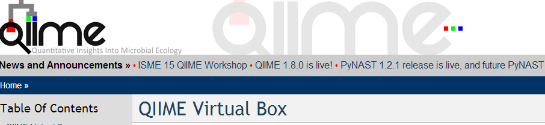
Please Note:
You will need a program to unzip files. If you are unsure about having such a program, then please download 7-zip (http://downloads.sourceforge.net/sevenzip/7z920-x64.msi) and install the program.
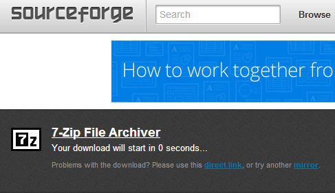
INSTRUCTIONS to load QIIME Virtual Box for Windows 7
- Download and install the VirtualBox (VB) version 4.3.12 for your machine. (https://www.virtualbox.org/wiki/Download_Old_Builds_4_3)
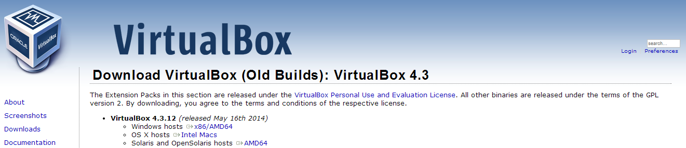
- Download the 64-bit QIIME Virtual Box (ftp://thebeast.colorado.edu/pub/qiime-release-VMs/QIIME-1.8.0-amd64.vdi.gz) . This file is large (approximately 2.3 Gb) so it may take between a few minutes and a few hours depending on your internet connection speed.
- You will need to unzip the “QIIME-1.8.0-amd64.vdi.gz” file you just downloaded.
- Right click on the file
- Select “Extract Here”
- This will take several minutes and create the file: ““QIIME-1.8.0-amd64.vdi”.
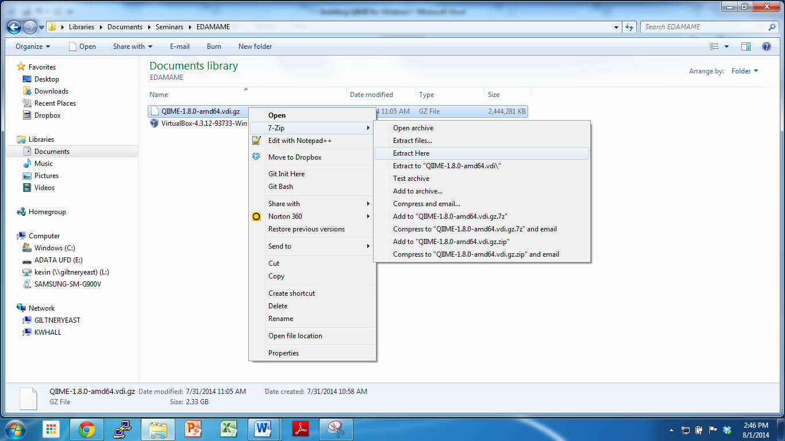
- Create a new virtual machine:
- Launch Oracle VM VirtualBox from the Start Menu, and create a new machine (Press the blue “New” button).
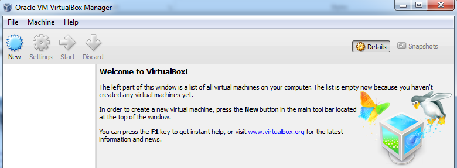
- A new window will show up. In this screen type “QIIME” as the name for the virtual machine. Then select Linux as the Operating System, and Ubuntu (64 bit) as the version. Click Next.
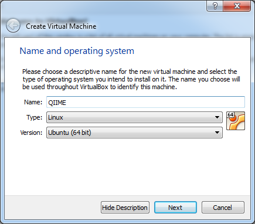
- Select the amount of RAM (memory). You will need at least 1000Mb, but the best option is based on your machine (3000+ Mb is ideal). If possible, avoid going into the red portion of the sliding scale. After selecting the amount of RAM, click Next.
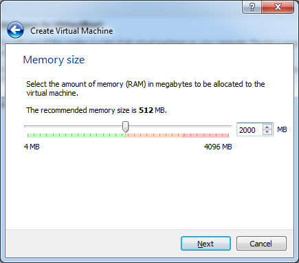
- Select “Use existing hard drive”, and click the folder icon next to the selector (it has a green up arrow). In the new window locate the virtual hard drive that was unzipped in Step 3. Select the file and then click Open.
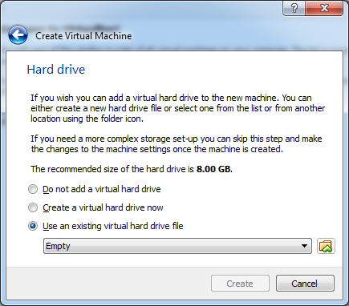
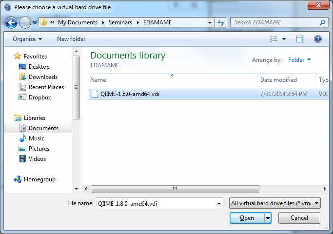
- In the new window click Create.
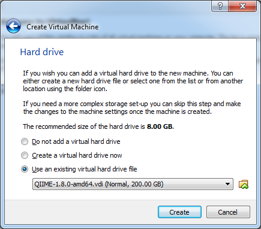
- Double click on the new virtual machine created – it will be called QIIME – to boot it for the first time. This may take several minutes.
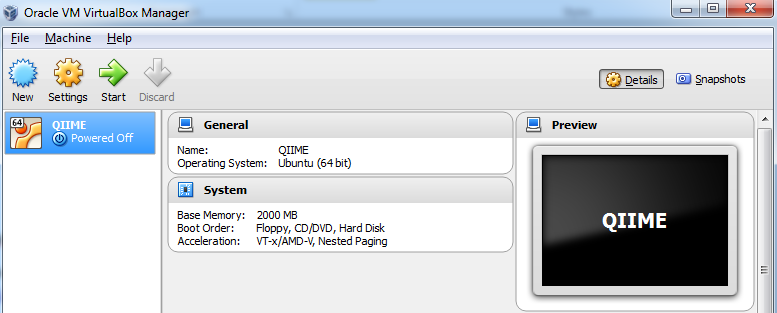
- If the window looks the image below, then CONGRATULATIONS! You are now running Ubuntu (a Linux operating system) on your Windows computer.
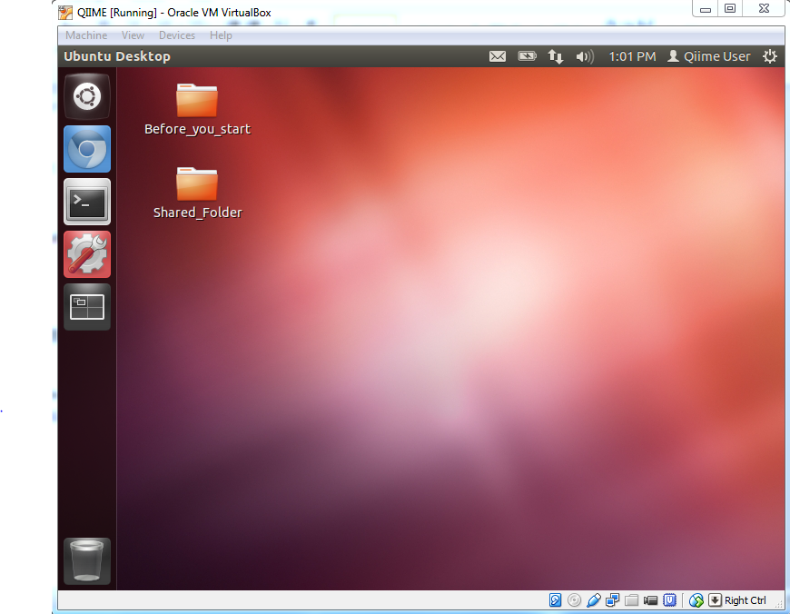
- When your new virtual machine boots, you will see a folder on the Desktop called “Before_you_start”. Double click on that folder to open it, and then double click on the “1.Welcome.txt” file in that folder. Read the file, however follow the updated instructions below to get you started with using your QIIME virtual box.
Getting Started with your QIIME Virtual Box
Before getting started with QIIME, you should install the Virtual Box guest additions. The guest additions are a set of applications that will be installed in the virtual machine to add features such as enabling a larger window.
- Go to the virtual box menu and select Devices->Insert Guest Additions CD Image...
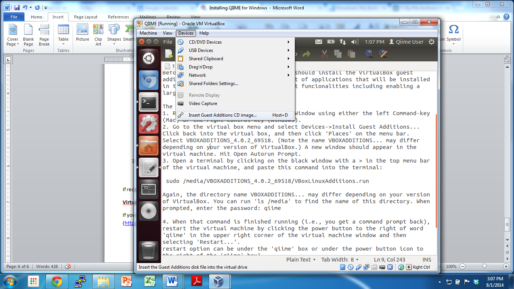
- Click back into the virtual box, Select VBOXADDITIONS_4.3.12_93733 (it looks like a CD icon on the left hand side. (Note the name VBOXADDITIONS... may differ depending on your version of VirtualBox.) A new window should appear in the virtual machine. Select “Open Autorun Prompt”. Then select “Run” from the popup.
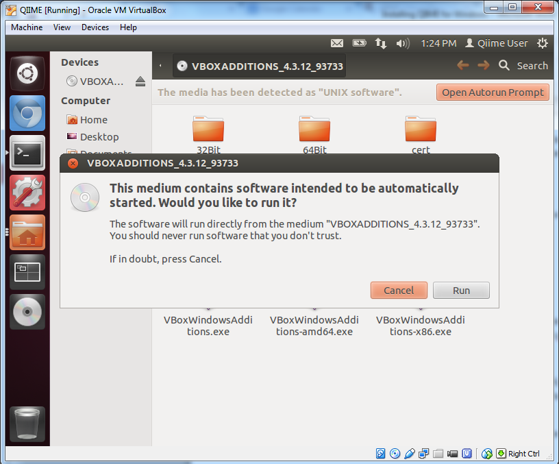
The PASSWORD is “qiime” (all lowercase). Press Return once prompted.
Open a terminal by clicking on the black window with a “>_” in the left menu bar of the virtual machine, and type this command into the terminal:
sudo /media/VBOXADDITIONS_4.3.12_93733 /VBoxLinuxAdditions.run
Again, the directory name VBOXADDITIONS... may differ depending on your version of VirtualBox. You can run 'ls /media' to find the name of this directory. When prompted, enter the password: “qiime”
- When that command is finished running (i.e., you get a command prompt back), restart the virtual machine by clicking the power button to the right of word 'qiime' in the upper right corner of the virtual machine window and then selecting “Shut Down...” followed by “Restart” on the left side of the popup window.
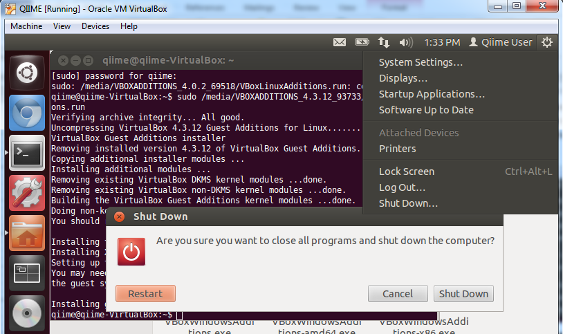
After the virtual box restarts, select "Devices" then "Drag 'n' Drop" then click on "Bidirectional". This will enable you to copy and paste material from your "Host" Windows 7 computer into your "Virtual Box" Linux computer. The “1.Welcome.txt” provides details on how to copy and paste in the terminal.
If you are interested in knowing which software has been installed in this Virtual Machine move on to Document 2; if you are having problems with the network, i.e. the wget commands do not work, move to Document 3; otherwise move along to Document 4. All the Documents are in the Before_you_start folder on your desktop.
Software and Dataset Installations in your Virtual Box
- Open a terminal by clicking on the black window with a “>_” in the left menu bar of the virtual machine. First, install PandaSeq from Dr. Josh Neufeld's Lab from Waterloo University by entering this command into the terminal:
sudo apt-add-repository ppa:neufeldlab/ppa && sudo apt-get update && sudo apt-get install pandaseq
- Now we will get an example data set from the Schloss Lab at the University of Michigan by entering this command into the terminal:
wget http://www.mothur.org/w/images/d/d6/MiSeqSOPData.zip
If you are interested, the details can be found in the following paper: Kozich JJ, Westcott SL, Baxter NT, Highlander SK, Schloss PD. (2013): Development of a dual-index sequencing strategy and curation pipeline for analyzing amplicon sequence data on the MiSeq Illumina sequencing platform. Applied and Environmental Microbiology. 79(17):5112-20.
- Now unzip the downloaded file by entering this command into the terminal:
unzip MiSeqSOPData.zip
VirtualBox help video
If you are having difficulty, then there is a video illustrating these steps can be found here. (http://www.youtube.com/watch?v=1jYupkquaME)

comments powered by Disqus